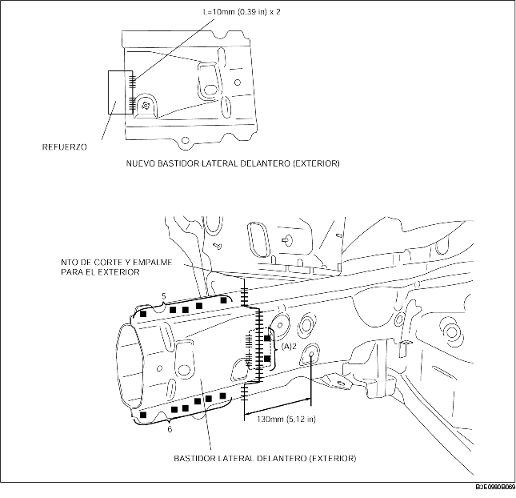

1. Construir un panel de refuerzo utilizando el material del bastidor lateral delantero.
2. Para cortar y empalmar los componentes nuevos o actuales, cortar en los puntos indicados en la figura y biselar los puntos de corte y empalme de los componentes nuevo y actual.
3. Cuando se instalan componentes nuevos, instalarlos provisionalmente a los componentes actuales, luego medir y ajustar la carrocería según las dimensiones estándar.
4. Para instalar la parte interior, instalar provisionalmente los componentes nuevos y actuales, soldar el componente actual y el refuerzo, luego soldar de tope los componentes nuevos y actuales.
5. Dado que la parte exterior no puede soldarse a los componentes actuales desde el interior del bastidor, taladrar 2 orificios para la soldadura en los puntos indicados por (A) en los componentes actuales. Instalar el refuerzo y el componente actual soldando desde el exterior del bastidor, luego soldar de tope los componentes nuevos y actuales.
6. Alisar el área donde el interior y el exterior se han soldado de tope con una fresadora de discos para acabar la superficie.
